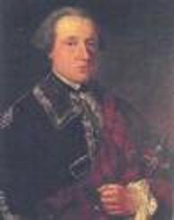

Lochiel's awa tae France
but he'll come back again
Tune
Sequenced by Ch.SouchonAnother version: Pipe version


|
No Text
Reel / Quickstep (4/4 time) First published in 1847 Soon after Lochiel's meeting with Charles on 30th August 1746, two vessels of war despatched by the King of France arrived at Lochnanuagh. In these Charles and about a hundred of his adherents embarked. Lochiel was one of them. The ships left on 20th September.
Soon after his arrival in France, Lochiel received the command of a regiment in the French service.
|
Pas de texte
Reel / Quickstep (4/4 temps) Publié en 1847. Peu après sa rencontre avec Charles, le 30 août 1746, deux vaisseaux de guerre envoyés par le roi de France arrivèrent à Lochnanuagh. Charles et une centaine de ses partisans y embarquèrent et Lochiel était de ceux-là. Les bateaux partirent le 20 septembre 1746. Aussitôt arrivé en France Lochiel se vit confier le commandement d'un régiment dans l'armée française. Il mourut sur les lieux de son exil en 1748, laissant deux fils dont l'aîné, John, lui succéda à la tête de son régiment, mais mourut très jeune. Charles, le cadet, obtint de la Couronne Britannique des baux d'usage sur certaines parties du domaine familial et devint officier dans le 71ème Régiment de Highlanders auquel il incorpora des hommes de son clan. Ces Cameron refusérent d'embarquer sans lui quand on voulut les faire combattre à l'étranger. Bien que gravement malade, il s'empressa de monter de Londres à Glasgow pour les calmer et cet effort excessif lui coûta la vie peu après. |
|
THE DEATH OF THE GENTLE LOCHIEL
Scots Magazine December 1748 Dead is Lochiel, the terror of whose arms, So lately shook this island with alarms. Be just ye Whigs and though the Torries mourn, Lament a Scotsman in a foreign urn, Who, born a Chieftain, thought the right of birth, The source of all authority on earth. Mistaken as he was, the man was just, Firm to his word and faithful to his trust, He bade not others go, himself to stay, As is the pretty, prudent modern way, But, like a warrior, bravely drew his sword, And raised his target for his native lord. Humane he was, protected countries tell, So rude a host was never ruled so well. Fatal to him, and to the cause he loved Was the rash turmult which his folly moved, Compell'd for that to seek a foreign shore, And ne'er behold his mother country no more, Compell'd by hard necessity to bear, In Gallia's hands a mercenary spear, But Heaven, in pity to his honest heart, Resolved to snatch him from so mean a part. To cure at once his spirit and mind, With exile wretched and with error blind, The mighty mandate unto death was given, And good Lochiel is now a Whig in heaven. Source: Clan Cameron Archives (www.lochiel.net/) Is there a higher compliment than your own enemy's acknowledgment ? |
LA MORT DE LOCHIEL LE GENTILHOMME
Scots Magazine December 1748 Lochiel est mort dont le terrible bras, Plongeait hier cette île dans l'effroi. Whigs, mêlez vos pleurs à ceux des Torries Pour l'Ecossais, mort loin de sa patrie. Né chef, pour lui c'est la seule naissance Qui justifiait les liens d'obéissance. Dans son erreur il fut un homme droit, Fidèle à sa parole et à sa foi. Il pratiquait la vertu de l'exemple, Et méprisait la moderne prudence Et si son sabre accomplit tant d'exploits, Son écu ne protégea que son roi. Humain, aux dires des races alliées, Nul mieux que lui n'a conduit une armée. Ce qui perdit et lui même et sa cause Ce fut la folle tournure des choses, Le contraignant à fuir vers d'autre cieux, Loin du berceau de ses propres aïeux Et pour tenir son rang, offrir son bras Mercenaire à nos ennemis gaulois. Le Ciel ému de sa noble souffrance, Hâta la fin de cette déchéance En apaisant son esprit fourvoyé Et son âme que l'exil accablait: La mort manda, c'était là sa besogne Un Whig au ciel: Lochiel le Gentilhomme. Source: Clan Cameron Archives (www.lochiel.net/) Peut on rêver plus beau compliment que la louange de son propre ennemi? |